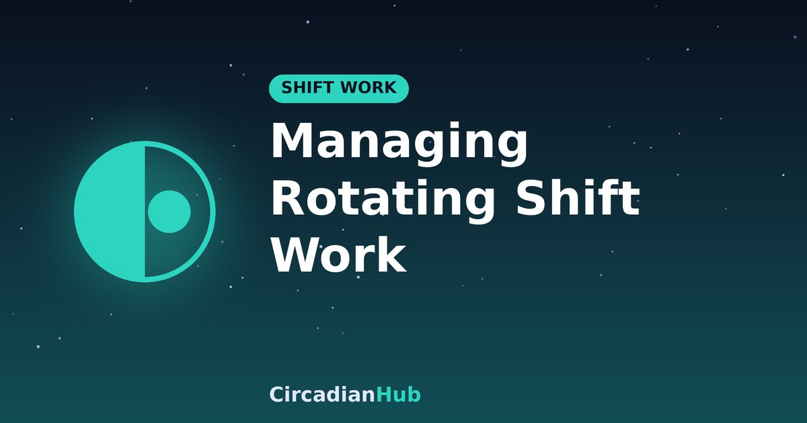

Managing Rotating Shift Work: How to Adjust Your Body Clock Between Shifts

Rotating shifts are among the hardest work patterns for sleep. Just as your body starts to adjust to nights, the rota changes and you are back on days. Because the body clock moves only about an hour or so a day, a rota that flips faster than that leaves you permanently out of step. This guide explains how rotations work, what the research suggests, and how to plan your sleep, light and meals around a changing pattern.
Why rotating shifts are hard
Your body clock controls sleepiness, body temperature, digestion and hormone release across a 24-hour cycle. Light is its main cue. When your working hours keep changing, the clock has no stable pattern to follow, so you are often sleepy at work and wide awake when you are supposed to sleep. This is a mismatch between your internal time and your schedule, and it is common, not a personal failing.
Forward versus backward rotation
Most people find it easier to move their day later than earlier. This is because most body clocks run slightly longer than 24 hours, so they drift later naturally.
- Forward rotation moves from days to evenings to nights. It follows the clock's natural drift and is generally easier to cope with.
- Backward rotation moves from nights to evenings to days. It asks the clock to move earlier, which is harder and often leaves less time to recover between shifts.
If you have any say over your rota, ask for a forward-rotating pattern and for at least 11 hours off between shifts. Quick returns, where you finish a late shift and start an early one a few hours later, are particularly damaging to sleep.
Fast and slow rotations
Rotas differ in how many nights you work in a row.
| Pattern | What it means | What to aim for |
|---|---|---|
| Fast rotation | One to three nights, then a change | Keep your body close to a day pattern; use anchor sleep and naps |
| Slow rotation | Blocks of a week or more on nights | Commit to a night schedule; use light and darkness to help adapt |
There is no single best answer. With fast rotations, complete adaptation to nights is unlikely, so the goal is to protect sleep and manage tiredness. With slow rotations, you can adapt partly, but adaptation is rarely complete, especially if you revert to day habits on days off.
Using anchor sleep
An anchor sleep is a block of sleep, often around four hours, that you keep at the same time every day regardless of shift. It gives your body clock a fixed point. For example, you might always sleep between 3 am and 7 am on top of extra sleep or naps that fit around work. It is not perfect, but it reduces the size of the swing between shifts.
A sample plan: four nights after days
| Day | Sleep plan |
|---|---|
| Last day shift | Nap for 90 minutes in the afternoon, then go to bed later than usual |
| Night 1 | Wake late morning, nap 90 minutes before shift; sunglasses on the way home |
| Nights 2 and 3 | Core sleep about 08:15 to 14:15, second nap before the shift |
| Night 4 | Shorter morning sleep; get to bed early that evening |
| Back on days | Sleep at about 21:00 to 22:00; morning light after waking |
Managing light between shifts
Light is the most powerful tool you have. The general rule is to get bright light when you want to be awake and to avoid it when you want to sleep.
- On nights: use bright light in the first half of the shift and dim it towards the end.
- Driving home: wear sunglasses so morning light does not signal the start of the day.
- Moving back to days: get bright light soon after waking and avoid it late in the evening.
Recovery after a run of nights
After your last night, do not try to force a normal day. Sleep for a shorter block in the morning, perhaps four or five hours, then stay up until the early evening and go to bed early. This lets you begin returning to days without a long, disruptive lie-in. Expect the first couple of nights to be lighter, and give yourself two nights of decent sleep before the next demanding shift.
Eating and caffeine when your rota changes
Meal timing follows your body clock, and irregular eating adds to the disruption. Aim for your main meal before the shift begins or early in it, and keep snacks light later in the night. Stop caffeine about six hours before planned sleep. Our night shift nutrition guide gives ideas.
How to handle a quick turnaround
If you finish a late shift and must start an early one, protect what sleep you can. Go to bed as soon as you get home, keep the room dark and quiet, and set a single alarm. Take a short nap of 20 minutes during the day if you can, and avoid driving when drowsy. If quick turnarounds are frequent, speak to your manager or union about scheduling, since they are a recognised safety issue.
Family and social life
A rotating rota affects everyone in the household. Share your schedule with family, agree quiet hours for daytime sleep, and choose one or two regular social commitments that you protect. Planning meals and downtime on days off makes the pattern more sustainable. See our guide to sleeping during the day for the bedroom setup.
Using a calculator
Working out sleep windows every time the rota changes is tedious. The Shift Work Sleep Calculator takes your shift start, length and commute and suggests sleep times built on whole 90-minute cycles. Re-enter your details each time the pattern changes, and you have a starting plan in seconds. For an example of the arithmetic, see our night shift sleep schedule.
Warning signs that need attention
Feeling tired on a rotating rota is normal. It becomes a problem if you regularly cannot sleep in your planned window, feel very sleepy at work, have near misses while driving, or feel low or irritable for weeks. These can be signs of shift work sleep disorder, which we cover in a separate article, or of another condition such as sleep apnoea. See a doctor if this sounds like you.
Rotating shifts and long-term health
Research links long-term shift work with a higher risk of sleep problems, digestive complaints, mood difficulties and, over many years, metabolic and cardiovascular conditions. The International Agency for Research on Cancer has also classified night shift work as probably carcinogenic to humans, based on limited evidence. These findings describe averages across large groups, not what will happen to any one person, and the risks are thought to be partly reducible with good sleep, regular meals, exercise and health checks. Ask your doctor about screening that suits your situation.
Tips for the commute home
- Wear sunglasses to reduce morning light.
- Do not drive if you are drowsy; take a short nap first or use a taxi or lift.
- Open a window or play upbeat audio to stay alert, but do not rely on them as a fix.
- Keep a routine for arriving home: light snack, shower, then straight to bed.
Keep a two-week sleep log, noting when you went to bed, when you woke and how alert you felt at work. Patterns in the log often show which shift changes cause the most trouble, and they make it much easier to plan your next rotation and to discuss changes with your manager or doctor.
Talking to your employer
Many workplaces can improve rotas if staff raise the issue. Useful requests include forward rotation, at least 11 hours off between shifts, limited runs of consecutive nights, early notice of the rota, and a quiet area for breaks. Bring a short summary of the research and your own sleep data, for example a two-week sleep log, to make the case.
Frequently asked questions
Can the body fully adapt to rotating shifts?
Rarely. The aim is to reduce the disruption, not eliminate it.
Is it better to stay on nights during days off?
It can help if you work many nights in a row, but it can be socially difficult. A compromise is to shift only partly.
How much time should I allow between shifts?
At least 11 hours is a widely used guideline, and more is better when moving between days and nights.
Do naps help on rotating shifts?
Yes. A short nap before a night shift, or a 20-minute nap in a break where permitted, can improve alertness.
Summary
- Prefer forward rotations and at least 11 hours between shifts.
- Use anchor sleep, naps and planned wind-downs.
- Control light: bright when you need to be awake, dark when you sleep.
- Recover after nights with a short morning sleep and an early bedtime.
- Seek help for persistent sleepiness or insomnia.
Plan sleep around your shift with our Shift Work Sleep Calculator.
Sources and further reading
- NIGMS (NIH): Circadian Rhythms fact sheet
- CDC/NIOSH: How Shift Work and Long Work Hours Increase Health and Safety Risks
Last updated: 1 October 2026. Links are general background reading from public-health organisations. How we write and update our guides.
Medical disclaimer: This article is for general information only and is not medical advice. If you have persistent sleep problems or excessive daytime sleepiness, speak with a doctor or sleep specialist.